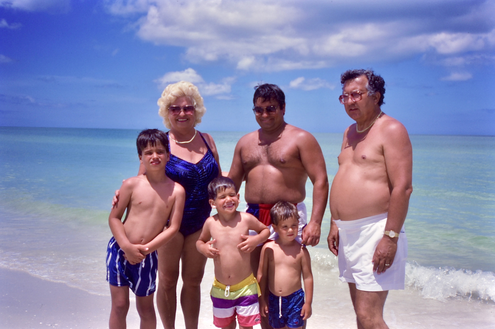

Previously on scaletta.org, I posted a long review of a negative scanner gadget. After using that gadget for scanning a ton of slides and negatives, I’m afraid I just can’t recommend it any more. The results for color negatives were OK (and only just OK after applying extensive post-processing as detailed in that article), but as I used it for slides it was just unacceptable. In particular, parts of the slide would blow out but then change to a sickly yellow color. Even when it didn’t blow out, the scans were harsh and overly contrasty. I ended up selling the thing off.
So after scrapping the scanner, I still had hundreds of old slides I wanted to digitize. So what did I end up using instead? That’s what this article is going to cover.
OK, so to cut to the chase, I ended up “scanning” the slides (and now, color negatives) using my digital camera, which is a Nikon D5600 DSLR. Besides the camera itself, you need a few more pieces of gear to make this work:
OK, scanning slides with your camera is pretty straightforward! You put the slide on the light table, point the camera at the slide, and snap away. I’ve found there are a few settings that will give better results:
Here are some sample scanned slides! These have been cropped and hit with with the “automatic enhance” command in Photos.app, and that’s all the work it takes.

Here’s a fun one. Nice view from the balcony, right?
Well, that one was actually taken with the camera’s white balance set to “Auto.” Here’s the same slide with white balance set to “Daylight” (fixed at about 5500 K) (and after blowing off the dust properly!):
This matches what the slide looks like when viewing with your eyes. The scene was actually closer to sunset! Wild. Use a fixed white balance!
All of the above has been about scanning slides, which are color positive images. Those are about the easiest thing for the camera to scan, because the colors of the captured images should match what we see with our eyes. Black and white negatives aren’t too much harder—you just need to “invert” the image using software. Easy-peasy and you can get good results:
But what about color negatives? These are much trickier. You can’t just invert the image, because most negatives include an “orange mask” that separates the colors. A simple inverted color negative results in cyan color cast, which is no good. Here is an example, with the orange-masked original on the left and an inverted version on the right:
More than that, once you get into inverting the image and removing the orange, how do you know what colors are “right?” Should your scans match the prints? Is there some standard you should follow?
No, not really! Back in the “old” days, when you’d get your pictures developed at a mini-lab, the technician would manually adjust the colors and exposure of each print! Plus, each type of photo paper has its own color casts and dynamic range that are very different from film! What this means is that there’s no real “truth” for what a positive image from a color negative should look like, and we should just focus on getting to a result that we’re happy with.
OK, so let’s get real. Here’s my technique for scanning and processing color negatives, developed by employing way too much experimentation.
OK, now we need to process the image and invert the negative. I use Pixelmator Pro, but almost any competent image editing software will work. First, as before, we need to invert the negative. I also add some sharpening at this point.
OK, this is starting to get recognizable. Changing the exposure has improved the dynamic range, and because of the white balance, the cyan mask has been removed in the shadows. We still need to fix the colors. For that, you can use the “curves” or “levels”tool to expand each color channel independently to cover the full tonal range. Many tutorials will tell you to manually adjust the high and low points for each color channel manually so that each channel barely clips. This will work, but it’s simply not feasible for scanning more than a handful of frames. Instead, have the software automatically stretch each channel independently. That’s what it’s good for! In Pixelmator Pro, in the Curves panel, select “Auto Color” from the drop down menu. Here’s what you get:

OK, that’s pretty good! You can get similar results in the GIMP by using “Auto Input Levels” in the Levels window, or in ImageMagick with the -channel RGB -normalize command. A good hint is to make sure that the operation is only working on data from the cropped negative image area, and not on any sprocket holes, backlight, or other surrounding areas.
As a finishing touch, I added a new color adjustment layer and performed an “ML Enhance” machine-learning general image enhancement. I also erased some lint from the image with the Repair tool. Here’s the final image:

It looks great, and all of the editing is fast and mostly automated! When I compare it to the accompanying 25-year-old prints (which are on Fuji photo paper), it has much more vibrant colors and way more tonal range, especially in the shadow detail. What the heck, here is the final scan (on the left) compared to a scan of the print (on the right).
Plus, that’s a cool shirt, bro.
By Rocky Scaletta. © 2022.